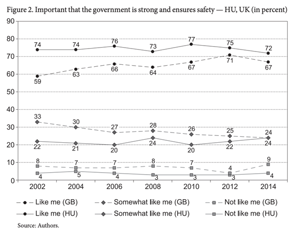
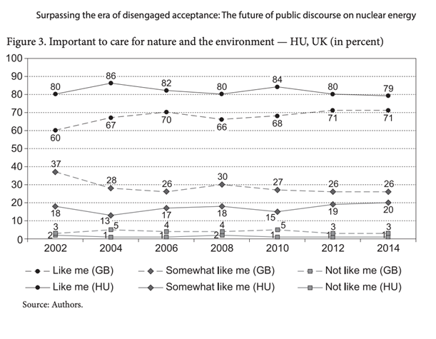

Further Discussion of Operational Issues
Energy Usage
The most pressing issue of commercial MCF fusion reactors is the immense energy usage needed to ignite the reactor to sustain the plasma's critical temperature and pressure to have a likely probability of successful Deuterium Tritium fuel collision. An example of this is the JET reactor -based at the Culham Centre for Fusion Energy, which has stated it requires 700-800MW of energy [1] to create and sustain the conditions for fusion. Requiring many specialised techniques and equipment, including:
- Ohmic heating using a transformer to drive current through the plasma against the associated resistance with the plasma and cause heating in the same way a wire gets hot when a current passes through a metal.
- Injecting accelerated neutral atoms and via collisions with plasma ions transfers kinetic energy.
- Using beams of high energy microwaves that get absorbed by the plasma causing further heating.
Through all of these techniques, the plasma in the core of the Tokamak has
temperatures of up to 100x10^6 K, which needs to be confined from the
reactor's vessel walls using superconducting magnets (an additional energy
drain). When the reactor is at these required conditions, 80% of the energy
per successful fusion process is from the production and acceleration of
neutrons (the product of the reaction that will allow us eventually to
produce electricity). In comparison, 20% goes towards the bi-product of the
reaction, namely the production of a Helium atom. The problem with helium
production and any energy gained in the fusion process is the Coulomb
attraction between the positive protons in the helium atom and the
dissociated electrons in the plasma, causing deceleration. To combat this,
sustained energy input is needed. [2]
The reason for such large energy requirements, even for light element fusion
reactions which would require the least amount of energy (i.e.
Deuterium-Tritium reactions), comes from the fact that the nucleus has
positively charged protons. If two positively charged particles are nearby,
they always repel, called Coulomb repulsion. Because of this, D-T reactions
require a 10KeV perfusion process (1:1 D-T atoms), which requires a
temperature of ~108 K [2] for a likely
probability of successful collision.
Another issue is that while it is theoretically possible to create net
energy from a fusion reaction, this is only when the reactor is under
pulsed loads. This is the technical term for when the reactor is undergoing
nuclear fusion. However, for large amounts of time the reactor is idle and
below the critical plasma temperature. During all of this, it is still
consuming large amounts of energy needed to run secondary systems
maintaining and analysing the reactor. These include:
- Cryostats
- Vacuum pumps
- Ventilation
- Safety systems
- Instruments and sensors
The main issue with these secondary components is that they require
alternative energy sources (called Auxiliary power using auxiliary systems.)
The ITER [3] reactor
still requires 120MW for auxiliary systems and 500 MW under pulsed loads. It
also states in the current stages of the project 200Mvar is required for
pulsed loads and 48Mvar for continuous loads. Mvar is a measure of mega
volt-amps, the power usage not being turned into work.
Radiation Damage to Components and People / Thermal Damage
As stated in the previous section, a fusion reaction aims to produce
high-energy neutrons using Deuterium and Tritium as fuel, which, like a
traditional power station, will heat a water bath to produce steam to be
used as propulsion for a turbine.
The way that we obtain net energy out of this reaction is these high-energy
neutrons. These will collide with the reactor vessel's side as, unlike the
plasma/helium ions and electrons, neutrons have no charge so they are
unaffected by the magnetic field that contains the plasma. The reactor's
side is called a nuclear blanket, a sheet of metal that absorbs the
accelerated neutrons' kinetic energy. In doing so, heat is transferred to
the metal on impact. By then running a passive water system in contact with
this, the water is heated and subsequently produces steam.
With this comes a major issue with reactors. These neutrons have energy in
the range of 14Mev per neutron [4]. Such high
energies can cause an issue as these neutrons can damage the reactor vessel
through a myriad of processes [4]:
- Thermally-induced defects weaken and crack plasma-facing materials (the vessel walls the plasma ring is enclosed in). The problem with the high-temperature variation of the inner vessel is fatigue caused by the expansion of the materials as temperature increases and the retraction as it is lowered. This potentially leads to issue's pressurising and sealing the reactor. Stress can induce cracking and weakening for continually operating the reactor under pulsed and idle loads.
- Oxidation of the heat sink can cause issues as a large amount of heat energy is in contact with a continual water stream. This leads to oxidation of the material and subsequently decreases the heat sink's thermal conduction making it a more inefficient process
- Neutron-induced degradation of the vessel walls via embrittlement. Embrittlement causes a loss in ductility of a material due to physical damage. (In our case, this is from the high-energy neutron collision, which leads to crack propagation). The most severe form of neutron degradation is transmutation, which is a form of nuclear bombardment. Weaknesses in the material are caused by stress tensors from the collision of neutrons with another material. It may cause the atom it collides with to form an isotope (1 additional neutron in the atom) with different properties to the original materials.
If there are successful neutron collisions with instruments and components
in the reactor, they become radioactive [5].
Simultaneously, these do have a shorter half-life compared to nuclear fission
waste, and the radioactivity per kg of fuel is smaller than fission[6].
However, the amount of waste produced is much more significant than in
fission due to the fusion reactor requiring such high specification of its
components and materials to function at such high temperatures.
Another consideration of these radioactive materials is for the people
operating the nuclear reactors as prolonged exposure to these may pose
issues such as radiation sickness or a higher risk of cancer if not properly
managed.
This erosion of materials means that the reactor's expensive and fragile
components could become compromised over time, leading to an inefficient or
non-functioning reactor. Consequently, regular replacement of various
components has to be done, which will severely increase the reactor's
running cost. This setback means that commercial viability is unfeasible
until this issue is resolved. In addition to this, the cost of properly
disposing of this waste so that it does not lead to environmental damage is
even greater.

A diagram of a Tokamak nuclear fusion reactor showing plasma based fusion, tritium breeding and electricity production.[7] Accessed 09/12/2020.
Deuterium Tritium supplies
The most promising reactor fuel for viable fusion reactors is deuterium and
tritium reactors (D-T reactor), which give a fusion neutron output 100x
greater than D-D reactors [8]. Although the raw
energy output from a single fusion process is much greater, there are
several drawbacks:
Deuterium production is abundant in nature, obtained from seawater[9]
(called heavy water) through chemical processes to extract it from regular
water and then further separated by electrolysis to obtain deuterium gas.
This means that it is inexpensive and easy to manufacture at a large scale.
Tritium, however, is much more difficult. It is not found in abundance in
nature like deuterium, mainly due to the fact it has such a short half-life
of 12.3 years. With current figures, the world supply of Tritium is
approximately 20kg. The issue is not only the limited supply, but that most
of this comes from massive water extraction, much like deuterium extraction
of heavy water, in the CANDU nuclear fission reactor, producing on average
1.5 kg a year[10]. This means most of the material for clean fusion power is
still coming from a highly polluting source. This is a real issue. It is
emphasised by ITER saying that reactors running to
produce net energy and feedback to the grid would require 300g of Tritium
per day to produce 800 MW of electricity[9].
So one reactor running continuously would deplete a substantial amount of
the world's supply on a daily basis.
One way that current fusion projects worldwide plan to tackle this is to
introduce a breeding blanket, which is Tritium's production from high energy
neutrons. These are present in the plasma colliding with lithium dosed panels
in the shielding to make their fuel and become self-sufficient [11].
The problem with this is not a practical one but a commercial one.
The cost of this makes the fuel over $1420/g [12],
which is quite costly for a high-temperature breeder needed for commercial
power production. This has a real impact on the commercial viability of the
fusion produced electricity, as accounting for the inefficiencies of heat
transfer, the initial energy needed to sustain nuclear fusion, and the
relatively low collision rate of D-T atom with the high maintenance cost and
fuel shortages at scale makes reactors costly when compared to alternative
sustainable energy production methods.

A diagram showing the stages of the fusion process for Deuterium and Tritium and the production of tritium from breeding blankets with doped lithium.[13] Accessed 09/12/2020.
Water Issues
Having already discussed the role water plays as a means of energy production,
we can now move onto another critical function being a coolant. This means
water is used to remove excess heat from auxiliary systems needed for the
reactor to function effectively. For example, in the current ITER facility,
water is used for both these purposes and is sourced from the Canal de
Provence in addition to cooling towers. The problem is when ITER is
operational; it requires 12 cubic meters per second to supply the reactor[8].
The implications of such demands mean any plans to commercialise fusion
reactors and to build many such systems worldwide would need to be located
near a large body of fresh water. This demand has the potential to cause
problems, especially in areas with high levels of drought and limited
drinking water.
In 2014 the university of California did a study on the implications and
limitations of using water in fusion power cores and found multiple issues
including[14]:
- Untreated freshwater having a relatively 'Low thermal conversion efficiency of 33%' leading to higher cost of electricity in fusion applications.
- Using water in contact with breeding blankets at such high operating temperatures leads to various chemical reactions. Examples such as solid breeding blankets containing beryllium (for neutron multiplication) can react to produce beryllium oxide and hydrogen gas which is highly combustible (also true for lithium doped materials, another breeding technique).
The potential for a hydrogen gas build due to leaks could pose a hazardous
and costly disaster if not properly managed. Furthermore, using high volumes
of water near high energy neutrons causes another scenario in which they
react to produce deuterium, which can then decay into tritium[15].
If this is left unprocessed and recycled back into the environment, it could
contaminate drinking water supplies or cause harm to the environment — a
problem initially associated with PWR fission reactors.
It should be noted that water has been used in all other commercial reactors
up to date, including fission reactors, because it is cheap and easily
accessible with an extensive industry infrastructure meaning sophisticated
systems can be implemented with little issue. However, more research for its
applications in fusion reactors is needed to solve the issues outlined above.

Diagram showing water system of fusion reactors around vessel walls for transportation of heat.[16] Accessed 09/12/2020.
Public Opinion
There has been much political debate whether to develop nuclear fusion
reactors, or whether it would be more useful to continue using fissile
reactors. Unlike fission reactors, fusion reactors have non-toxic emissions
and their costs of running, building and decommissioning are similar. There
is no risk of a meltdown, like the 2011 Fukushima accident on a fissile
reactor, and there is no risk of proliferation. Deuterium and tritium are
sustainable sources unlike the world’s dwindling supply of fossil fuels, and
gram for gram, nuclear fusion produces 4 million times more energy than
fossil fuel.
Unfortunately, as Figures 1, 2 and 3 below show us, in recent years there
have been a somewhat negative opinion on using nuclear energy commercially.
Although the figures below only compares the UK with Hungary (who currently
meet 50% of their electricity needs by producing nuclear energy) [17],
there is a general global consensus that people are beginning to disfavour
the use of nuclear energy. The UK Long Term Nuclear Energy Strategy
(Department of Energy and Climate Change, DECC, 2013) considers nuclear
energy next to renewables, as well as Carbon Capture and Storage (CCS)
(DECC, 2013 p.5) as fundamental energy sources for the National Grid; with
nuclear having the potential to deliver up to 75GW of the UK’s energy
consumption. 14 of the current 15 fissile reactors will soon expire and will
need to have their life cycle extended - however the replacement of ageing
plants will require significant development of nuclear energy capacities.
The nuclear development program and the installation of new nuclear power
stations rely heavily on the involvement of French, Chinese, Korean and
Japanese technology and financing. Unlike for many other European countries,
the Fukushima accident of 2011 has had no (significant) impact on government
nuclear policies regarding nuclear energy in Japan. There has, however, been
a global trend since 2011, in tightening security standards, a more thorough
risk analysis process and the consequent rise in planning, financing,
building and operational costs. Of 17 pieces of research overviewed by a
british Parliament Committee, the majority showed clear - but conditional -
support to using nuclear energy, 8 of the 17 highlighted a much divided
opinion of the public, and a further 6 of 17 refused its extended use. There
is hope that the UK’s Hinkley Point C Project [18]
will change the general public perception of nuclear energy as a whole,
despite the growing concern over the involvement of French and Chinese
companies such as EDF, Areva and Chinese CGNPC.


Figures accessed 09/12/20[17]
Redundancy?
Britain has to reach net zero carbon emissions by 2050 and some argue that
investment in fusion is not the best way to achieve this, and instead the
government should fund the mass deployment of wind and solar energy. One
time chair of the ITER council, Sir Chris Lleqellyn Smith, has said: "The
cost of renewables has shot down while the cost of the world fusion project,
ITER has gone up” [19]. Although Smith does highlight
that even countries like Canada that have large amounts of renewables
require alternate energy sources to meet the energy needs of the country, he
said “we need a carbon free source of energy that can complement renewables
in the future” [19]. Wind and solar energy are both dependent on environmental
conditions, while fusion can be controlled to meet demand and has the
potential to produce large amounts of energy. Despite a larger initial
investment in commercialising fusion energy, it has many benefits with
abundant fuels, no radioactive waste and no CO2 emissions.
ITER’s website claims that “the ideal future energy mix for the planet would
be based on a variety of generation methods instead of a large reliance on
one source” [20] and that fusion would make a “positive contribution” [20]
to the challenges faced by alternative energy sources.
[1]EUROfusion, How much power is needed to start the reactor and to keep it working?, WWW document, https://www.euro-fusion.org/faq/top-twenty-faq/how-much-power-is-needed-to-start-the-reactor-and-to-keep-it-working/accesed 09/12/20
[2]C. Windsor. Can the development of fusion energy be accelerated? An introduction to the proceedings Phil. Trans. R. Soc. A.37720170446 (2019) http://doi.org/10.1098/rsta.2017.0446
[3]J.C. Gascon et al. Design, challenges and key features for the Iter electrical power distribution. Fusion Science and Technology, 61(1 T), 47–51. (2012)https://doi.org/10.13182/FST12-A13395
[4]J. Linke et al. Challenges for plasma-facing components in nuclear fusion. Matter and Radiation at Extremes, 4(5), 056201. (2019). https://doi.org/10.1063/1.5090100
[5]EUROfusion, Does fusion give off radiation?, WWW document, https://www.euro-fusion.org/faq/top-twenty-faq/does-fusion-give-off-radiation/accesed 09/12/20
[6]L. El-Guebaly. Goals, challenges, and successes of managing fusion activated materials, Fusion Engineering and Design, Volume 83, Issues 7–9, (2008), Pages 928-935, ISSN 0920-3796, https://doi.org/10.1016/j.fusengdes.2008.05.025
[7]National Institutes for Quantum and Radiological Science and Technology, Projects, Blanket design, WWW document, https://www.qst.go.jp/site/rokkasyo-fusion-english/4887.htmlaccesed 09/12/20
[8]D. Jassby, ITER is a showcase … for the drawbacks of fusion energy, WWW document, https://thebulletin.org/2018/02/iter-is-a-showcase-for-the-drawbacks-of-fusion-energy/accesed 09/12/20
[9]ITER, Tritium Breeding, WWW document, https://www.iter.org/mach/TritiumBreedingaccesed 09/12/20
[10]M. Ni, Y. Wang, B. Yuan, J. Jiang, Y. Wu, Tritium supply assessment for ITER and DEMOnstration power plant, Fusion Engineering and Design, Volume 88, Issues 9–10, (2013), Pages 2422-2426, ISSN 0920-3796, https://doi.org/10.1016/j.fusengdes.2013.05.043
[11]ITER, Fuelling the Fusion Reaction, WWW document, https://www.iter.org/sci/FusionFuels#:~:text=In%20the%20deuterium%2Dtritium%20accessed 09/12/20
[12]W. Kuan, M. A. Abdou. A New Approach for Assessing the Required Tritium Breeding Ratio and Startup Inventory in Future Fusion Reactors. Fusion Technology 35:3, pages 309-353. (1999), https://www.tandfonline.com/doi/abs/10.13182/FST92-A29862?journalCode=ufst19
[13]EUROfusion, Tritium: a challenging fuel for fusion, WWW document, https://www.euro-fusion.org/news/2017-3/tritium-a-challenging-fuel-for-fusion/accessed 09/12/20
[14]M. S. Tillack, P. W. Humrickhouse, S. Malang, A. F. Rowcliffe, The use of water in a fusion power core, Fusion Engineering and Design, Volume 91, (2015), Pages 52-59,ISSN 0920-3796, https://doi.org/10.1016/j.fusengdes.2014.12.013
[15]A. Monterrosa, Boron Use and Control in PWRs and FHRs. Department of Nuclear Engineering, University of California, Berkeley. (2012), http://fhr.nuc.berkeley.edu/wp-content/uploads/2014/10/12-007_Boron_Use_in_PWRs_and_FHRs.pdf
[16]T. Nagasaka, Developing new materials for the fusion reactor, WWW document, https://www.eurekalert.org/pub_releases/2018-12/nion-dnm120618.phpaccessed 09/12/20
[17]G. Sarlos, M. Fekete, Surpassing the Era of Disengaged Acceptance: the Future of Public Discourse on Nuclear Energy, Vol.11, Pages 71-76, (2018), https://www.researchgate.net/publication/325144768_Surpassing_the_era_of_disengaged_acceptance_The_future_of_public_discourse_on_nuclear_energy
[18]Personal communications with former Lead Electrical Engineer at ITER: Mr. A P Wilson BEng. CEng. MIET, (November 2020)
[19]M. McGrath, Nuclear fusion is 'a question of when, not if', BBC News, WWW document, https://www.bbc.co.uk/news/science-environment-50267017 accessed 09/12/20
[20]ITER, Advantages of Fusion, WWW document, https://www.iter.org/sci/Fusion accessed 09/12/20
[21]EUROfusion, Your questions answered, WWW document, https://www.euro-fusion.org/faq/#:~:text=In%20the%20JET%20tokamak%20plasma,low%20level